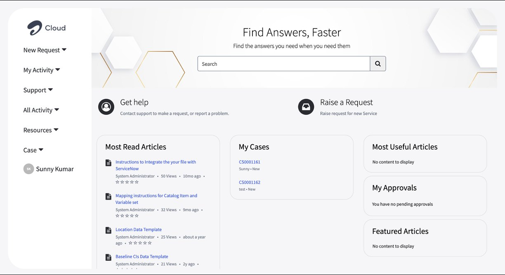
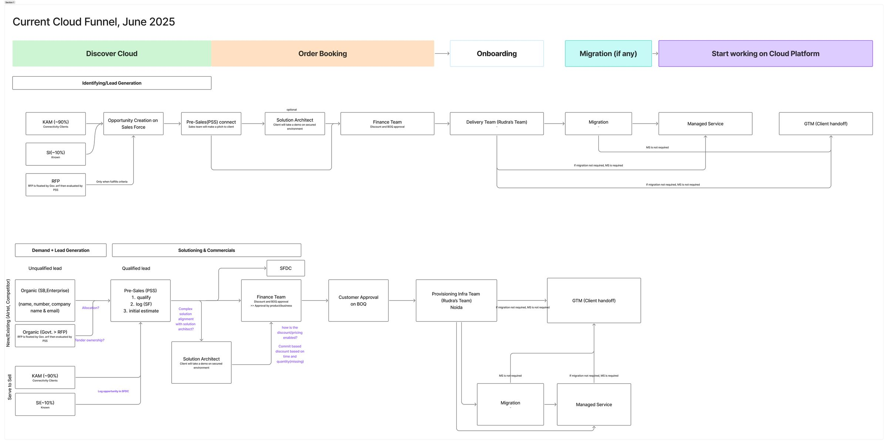
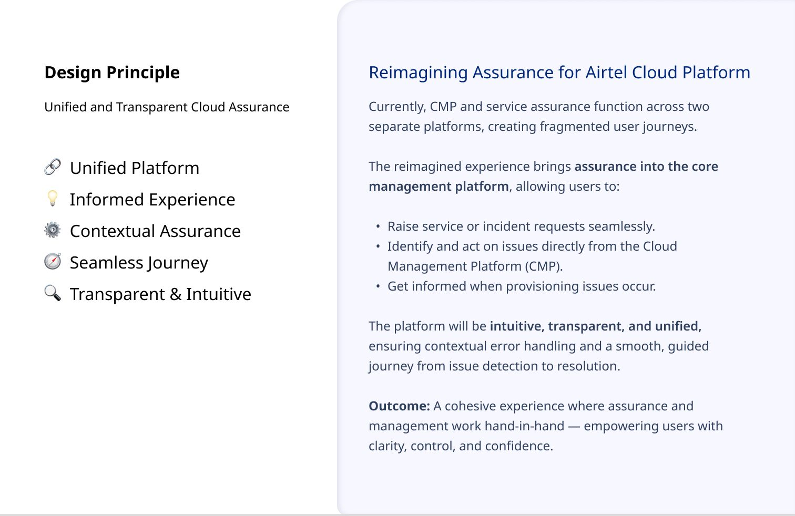
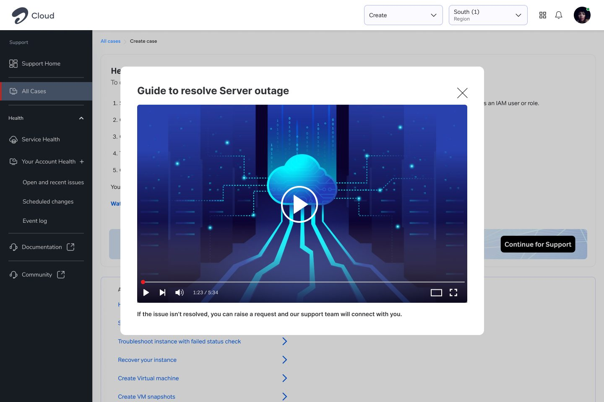
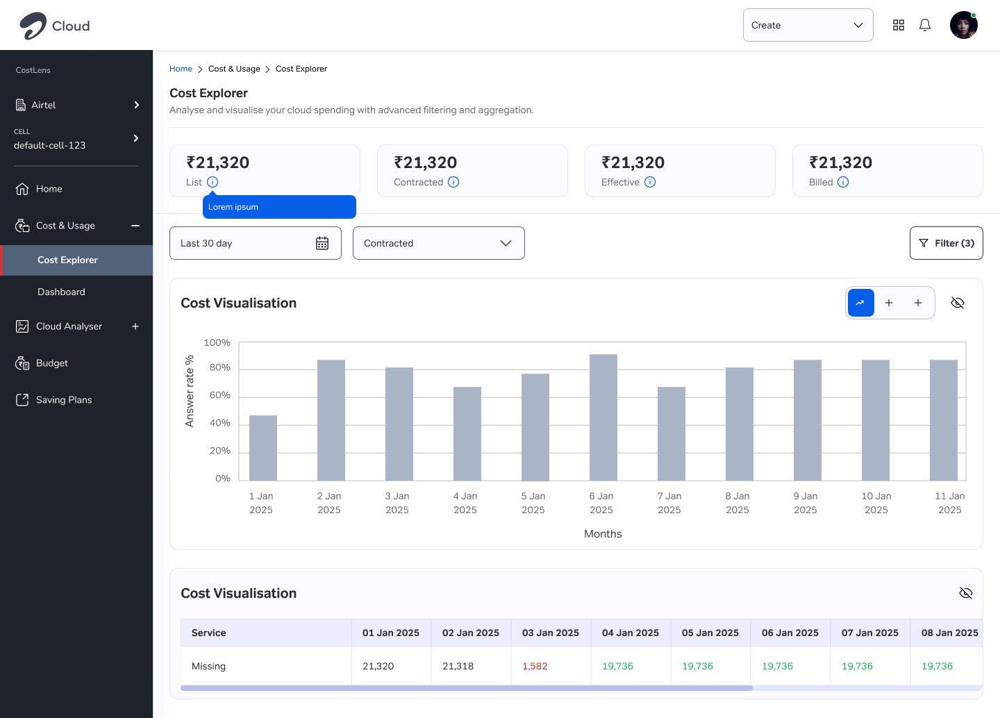

A growing platform, built by multiple teams
Airtel Cloud is an enterprise cloud platform offering compute, storage, security, cost management and migration services to business customers.
It launched in August 2025 with 18 enterprise clients. By October 2026, the platform had grown to 35 clients and more than 40 live services.
But the platform wasn't built by one product team.
- A partner designed and built the core console, key management and the initial support experience.
- An external team built Cloud Security Posture Management (CSPM).
- Internal developers built Cost Analyser and CloudFerry.
- My team worked with internal developers on the Price Calculator.
Each service had its own product owner, engineering team and delivery priorities. There was no single team with authority to redesign everything.
At the same time, Airtel was moving towards bringing more of the platform in-house. This created an opportunity to establish a more consistent experience and a reusable foundation for future services.
The real problem wasn't the number of tools
My initial instinct was to bring everything into one unified console. But as I studied the platform, its users and how mature cloud providers structure their services, I realised that forcing every tool into one interface wasn't necessarily the right answer.
The bigger problems were:
- Inconsistent interaction patterns across services.
- Limited clarity around service discovery and navigation.
- Security information that didn't always help users decide what to do next.
- A support journey fragmented across multiple teams.
- Repeated front-end and documentation work as new services were introduced.
How might we create a consistent customer experience without disrupting the autonomy of the teams building individual cloud services?
From auditing it to owning it
- Inherit: audit a platform I didn't design. 50 of 65 addressed
- Influence: improve independently owned services through evidence and collaboration. ~30% fewer tickets
- Unify: establish a common experience foundation without forcing all services into one console. 8/8 found the service
- Own: move from improving existing products to designing new platform capabilities. IAM and Observability in progress
Auditing a platform I didn't design
Pre-launch · 65 issues identified · 50 addressed
The first responsibility was to understand what was already there and identify the experience issues that could affect customers after launch.
The partner had designed and built the core console. Rather than starting with a visual redesign, I evaluated the experience field by field, looking for usability, consistency and operational issues.
The audit identified 65 issues, including:
- Conflicting validation behaviour.
- Undocumented field limits and constraints.
- Inconsistent interaction patterns.
- Content and error-message hygiene issues.
- Gaps in navigation and service-level workflows.
I prioritised the findings based on their impact and worked with the partner and internal stakeholders to get the fixes implemented.
What changed
- 43 issues were addressed before launch.
- 7 additional issues were addressed after launch.
- 15 remained dependent on capabilities and services that were not yet live, including global search and cross-service redirects.
This was not a redesign of the entire console. It was a focused intervention to improve the quality of the experience without putting the launch timeline at risk.
My contribution: audit, prioritisation, UX recommendations, design direction and coordination with the partner team.

The original behaviour next to the shipped fix, with callouts on what was wrong and what changed.
A second representative issue, before and after, with callouts.
Improving services on their owners' terms
Multiple product teams · Eight service areas · Cross-functional influence
I didn't own the engineering teams or the roadmaps of these services. Each team had its own priorities, delivery commitments and understanding of the product.
A centralised redesign would have been difficult to execute and unlikely to gain adoption.
Instead, I adapted my approach to each service: sometimes auditing, sometimes benchmarking, sometimes creating a new flow, and sometimes helping teams improve products they had already built.
One platform, eight ways of working
| Service | Built by | My contribution |
|---|---|---|
| Core console | Partner | Audited the experience and drove UX and hygiene fixes through the partner. |
| Assurance / Support | Partner | Studied the end-to-end support journey, benchmarked AWS and GCP, and designed the new experience with the partner. |
| Key Management (KMS) | Partner | Started from raw product information, benchmarked other providers and drafted the first key-management flow, later adopted by the partner. |
| CSPM | External team | Evaluated the product across five personas, identified experience gaps and recommended improvements that were implemented. |
| Cost Analyser | Internal developers | Recommended UX and information-architecture improvements after the initial product was built. |
| CloudFerry | Internal developers | Worked with the team on migration experience improvements and new UX ideas. |
| Price Calculator | My team + internal developers | Led the experience design and worked with developers to bring the product to life. |
| Service documentation | Internal platform work | Created a reusable documentation template and Airtel Cloud overview structure. |
The level of ownership varied. Some work involved designing a complete experience; other work involved evaluation, recommendations or influencing an existing implementation. That distinction mattered in a platform where delivery was distributed across teams.
Moving support from ticket submission to problem resolution
The original support experience was built on existing partner templates. It was functional enough to support the launch, but it did not reflect the complexity of the customer's actual journey.
A customer issue could move through thirteen steps, with different teams responsible at different stages. A better ticket form alone would not solve that problem.
I first mapped the order-to-activation journey to understand where customers encountered issues and where ownership changed. I then studied support experiences from AWS and GCP, developed five design principles and explored three concepts before aligning on the new direction with the partner.
The experience I designed
- Describe the problemStart with a short description rather than asking customers to complete a long support form.
- Explore suggested solutionsShow relevant articles and guided steps pulled from service documentation and SOPs.
- Raise a ticket if still unresolvedIf the suggested guidance doesn't help, customers can provide the additional information required by the support team.
- Track the issueA dedicated ticket view shows the responsible team and support contact, with follow-up questions handled in the same place.
The key design decision was to make self-service part of the support journey, while keeping escalation accessible.





The escalation step, with the extra details the support team needs.
Responsible team, support contact and follow-up questions in one place.
Describe an issue, see suggested articles, then escalate and track the ticket. A separate short clip for the self-service path, if available.
What the usage data showed
During the measurement period, 100 users entered the ticket-raising flow.
Separately, support data showed approximately 30% fewer tickets in April–May 2026 compared with the preceding period, following the new Assurance experience's launch in March 2026. The original target was a 10% reduction.
These are two different signals: the article interaction data shows how customers used the new flow, while the support data shows the overall change in ticket volume. The latter is an observed outcome after launch, not proof that the redesign alone caused the reduction.
From raw information to usable experiences
Not every service needed the same intervention.
Key Management — designing the first flow
KMS started with raw product and vendor information, without an established user experience. I benchmarked other cloud providers and drafted the first flow, including the choices between Software, HSM, Bring Your Own Key and Hold Your Own Key. The partner later adopted this flow in the platform.
CSPM — shifting from reporting to decision support
The external team had built the posture-monitoring experience. I evaluated it against Azure Defender and Google Security Command Center across five personas.
The evaluation highlighted a key gap: users could see security findings, but the experience needed to help them understand what to prioritise and why.
I documented the findings and recommended changes to make the experience more actionable. The resulting improvements were implemented in the live product.


Cost Analyser and CloudFerry — improving what already existed
Internal developers approached me after building these tools. I reviewed the experiences, benchmarked comparable cloud products and recommended improvements to their information architecture and workflows. These improvements are live in both products.
Price Calculator — designing with the engineering team
For the Price Calculator, my team led the experience design and worked with internal developers to translate the product direction into a working service.

The migration workflow.
Key screens from the designed experience.
One frame, many tools
Live · 40+ services
By this point, the platform had multiple services with different owners and different interfaces. My initial hypothesis was to bring them all into one unified console. But research changed that direction.
I studied how AWS, Azure and Google Cloud organise their platforms. Their services remain distinct, partly because different tools have different permission models, workflows and levels of complexity.
The audit and support journey mapping also showed that the biggest issues were inconsistency, navigation and hand-offs — not simply the existence of multiple tools.
The decision: unify the frame, not the tools
Instead of asking every team to rebuild its product, I proposed a shared experience foundation around the existing services. The foundation had five parts:
- Common top bar and service catalogueA consistent way to discover and move between services.
- Shared component libraryReusable interaction patterns and interface components.
- Common documentation templateA consistent way to understand services, processes and SOPs.
- Consistent support experienceA more predictable way to get help.
- Shared front-end foundationA reusable starting point for new services.
This allowed services to retain their specific workflows while giving customers a more consistent experience across the platform.
Each with its own patterns, documentation and entry point.
- Top bar + catalogue
- Shared components
- One docs template
- One support experience
- Shared front end
Services keep their own workflows and permissions; customers discover, read and get help the same way everywhere.
Designing the service catalogue
Previously, services were scattered across different entry points. Customers needed to know where a tool lived and how to access it.
I designed a common top bar with a service catalogue organised into familiar categories, using the structure of established cloud platforms as a reference. The new experience follows a simpler path:
- BeforeFind or remember the service linknavigate to itlog in separatelyaccess the tool
- AfterOpen the service cataloguechoose a categoryselect the serviceaccess it through single sign-on
The top bar, the catalogue's category structure and a service being entered through single sign-on, with callouts on category and service selection.
From a component library to a shared micro-frontend
The common experience needed to be more than a set of design guidelines.
I created the shared component library and experience patterns. Internal engineering then built a shared micro-frontend foundation from that library.
Every new service now starts from this shared front-end foundation, while existing tools are being migrated over time.
One front-end developer estimated that reusing the shared components and boilerplate reduced front-end implementation effort by approximately 30–50% per new service. This is a developer estimate, not a measured team-wide productivity result.
A medium-sized service, such as bare-metal storage, took around ten days for front-end and API set-up once the backend was ready, according to the original project account.
Navigation, forms, tables, buttons and feedback patterns, ideally shown reused across two or three different services.
What changed
- A common top bar and service catalogue connected 40+ services.
- Single sign-on simplified access between services.
- A common documentation template established a consistent structure.
- The component library became the basis for the shared micro-frontend.
- New services gained a reusable starting point; existing services are moving towards the shared foundation.
My contribution: research, the unification strategy, service catalogue and top-bar design, component library, documentation template and experience patterns.
Engineering contribution: implementation of the shared micro-frontend and adoption of the reusable foundation across services.
From improving existing services to designing new ones
IAM in development · Observability in design
The shared foundation changed how I could approach the next stage of Airtel Cloud.
Earlier, much of my work involved understanding an existing product, identifying gaps and influencing teams to improve it. Now, I was increasingly involved in defining new services from the beginning, working directly with the product manager.
Identity and Access Management
Identity and access management became one of the most important capabilities for the platform as it grew.
Access had evolved through different service-level arrangements, creating a need for a more coherent platform-wide approach.
I am designing the IAM experience from the ground up, starting with the underlying access model and translating it into user-facing workflows.
This is a separate case study in my portfolio, where I cover the research, information architecture, access model and design decisions in greater depth.
One image: the service ecosystem or roadmap with IAM and Observability highlighted as the next capabilities. Don't repeat the IAM case study.
Observability
Observability was another planned platform capability. I had previously worked on its initial direction, but the work was put on hold so identity and access could be prioritised first.
It is now back in the design process, with the intention of building it on the shared Airtel Cloud experience foundation.
What changed, and how we know
The platform did not have complete experience instrumentation at launch. I used a combination of audit findings, moderated usability evaluations, support data and engineering estimates to understand progress.
MeasuredModerated testEstimateBusiness context
| Area | Evidence | What it tells us |
|---|---|---|
| Platform quality | Measured 50 of 65 audit issues addressed | Early experience and hygiene gaps were prioritised and fixed. |
| Support experience | Measured ~30% fewer tickets in April–May 2026 vs the preceding period | Ticket volume reduced after Assurance launched. |
| Self-service interaction | Measured 73 of 100 users entering the ticket flow clicked suggested articles; 22–24 cancelled after finding a solution | Suggested guidance helped a portion of users exit the ticket-raising process. |
| Service discovery | Moderated test 8/8 participants found the requested service | The new catalogue worked for all participants in this moderated evaluation. |
| Shared platform | Measured 40+ services connected through the common top bar and catalogue | The shared experience foundation was adopted across the platform. |
| Front-end reuse | Estimate 30–50% estimated effort reduction per new service | One developer's estimate of the benefit from reusable components and boilerplate. |
| Product growth | Business context 18 clients at launch to 35 by October 2026 | Business growth during the period; not attributed to design alone. |
What we were still working towards
The original usability goals included:
- At least 85% success on core platform tasks.
- At least 80% success in discovering the right service.
- 10% fewer support tickets caused by usability problems.
In the first moderated evaluation of core console tasks, eight internal users tested VM and storage provisioning. Task success was approximately 70%, below the 85% target. The evaluation recorded time, queries and errors. Some remaining issues were dependent on capabilities such as global search and navigation that were not yet live.
The service-discovery evaluation had a separate result: 8/8 participants completed the requested-service discovery task. This should not be confused with the broader core-console task-success result.
Influence without authority
The most challenging part of this project was not designing individual screens. It was creating alignment across teams that had different priorities, delivery models and technical constraints.
I couldn't mandate a redesign across all services. I used audits, benchmarks, prototypes and evidence to make recommendations that teams could adopt and implement.
Migrating everything before launch was not feasible. Rather than delay go-live, I started building a shared component library that could be adopted progressively.
I worked from the available vendor information, benchmarked other cloud providers and drafted the first flow instead of waiting for a complete product specification.
The thirteen-step journey showed that a better form would not solve the problem. The experience needed to guide customers across the journey, from issue description to resolution and escalation.
Observability was sequenced behind identity and access. Some audit issues remained dependent on services that were not yet available. The shared foundation was introduced without forcing an immediate migration of every existing tool.
Decisions I would make differently
Looking back, I would push for identity and access to be addressed earlier in the platform's evolution. As the number of services and customers grew, access became a foundational platform concern rather than just another feature.
I also learned to challenge my own initial solution. My first instinct was to unify all services into one console. The research showed that unifying the shared experience — rather than the underlying tools — was the more practical and scalable direction.
Unify what customers experience, not necessarily what teams build
Airtel Cloud taught me that platform design leadership is as much about systems, alignment and sequencing as it is about interaction design.
I moved from auditing a partner-built console to influencing independently owned products, creating a shared design foundation and working with product and engineering teams on new platform capabilities.
The most important outcome wasn't a single redesigned screen. It was a shared experience model that could support a growing portfolio of cloud services without requiring every team to rebuild its product in the same way.
Make the platform feel consistent for customers, make the foundation reusable for engineering, and preserve the flexibility that individual product teams need to build well.
Project status: Airtel Cloud launched in August 2025 and continues to evolve. Assurance, KMS, CSPM, Cost Analyser, CloudFerry, Price Calculator, the common top bar and service catalogue are live. The shared front end is used for new services, with existing tools moving over progressively. IAM is in development and Observability is in design.
Core tools and catalogue live Shared front end rolling out IAM in development Observability in design